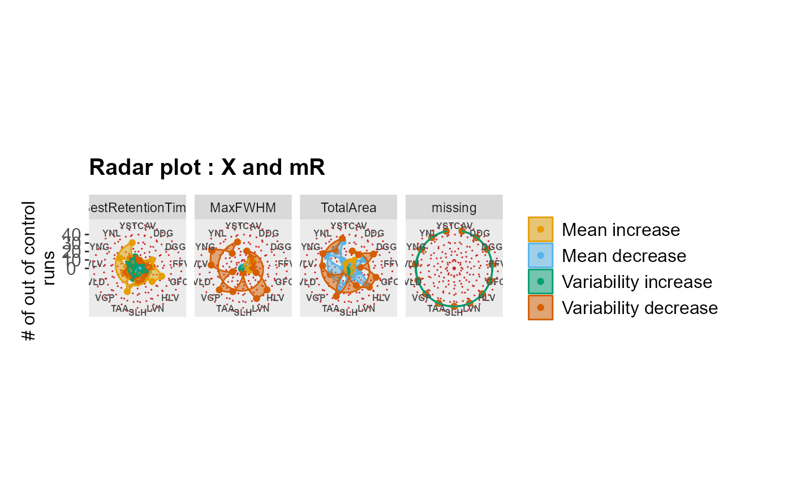
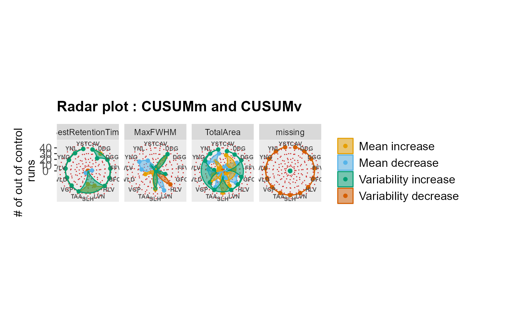
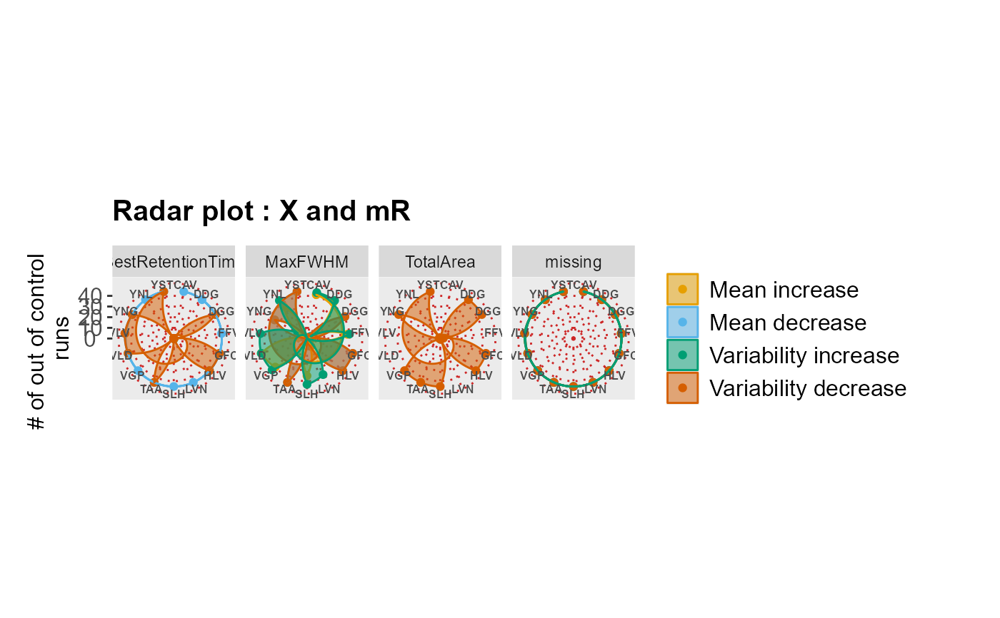

RadarPlot.RdA function to create radar plot to aggregate results from X and mR charts or CUSUMm and CUSUMv charts.
RadarPlot(
data = NULL,
L = 1,
U = 5,
method = "XmR",
listMean = NULL,
listSD = NULL
)omma-separated (.csv), metric file. It should contain a "Precursor" column and the metrics columns. It should also include "Annotations" for each observation.
lower bound of the guide set.
upper bound of the guide set.
defines the method selected to construct control charts.
list of the means for each metric. It is used when mean is known. It is NULL when mean is not known. The default is NULL.
list of the standard deviations for each metric. It is used when standard deviation is known. It is NULL when mean is not known. The default is NULL. automatically by using L and U. The default is NULL.
A radar plot to aggregate results per metric generated from XmR.Radar.Plot.DataFrame data frame or CUSUM.Radar.Plot.DataFrame data frame.
# First process the data to make sure it's ready to use
sampleData <- DataProcess(S9Site54)
#> Your data is ready to go!
head(sampleData)
#> AcquiredTime Precursor Annotations MinStartTime MaxEndTime
#> 1 9/19/11 13:14 VLVLDTDYK Not Available 24.30 25.08
#> 2 9/19/11 14:45 VLVLDTDYK Not Available 24.36 25.17
#> 3 9/19/11 16:15 VLVLDTDYK Not Available 24.19 24.96
#> 4 9/19/11 17:46 VLVLDTDYK Not Available 24.22 25.02
#> 5 9/19/11 19:16 VLVLDTDYK Not Available 24.27 25.05
#> 6 9/19/11 20:47 VLVLDTDYK Not Available 24.42 25.22
#> BestRetentionTime TotalArea MaxFWHM missing
#> 1 24.62 116034248 0.29 0
#> 2 24.70 127339240 0.31 0
#> 3 24.53 110745576 0.31 0
#> 4 24.59 130619640 0.31 0
#> 5 24.62 113469472 0.30 0
#> 6 24.76 120836432 0.30 0
# Draw XmR radar plot
RadarPlot(data = sampleData)

RadarPlot(data = sampleData, method = "CUSUM")

RadarPlot(
data = sampleData,
listMean = list(
"BestRetentionTime" = 27.78,
"TotalArea" = 35097129,
"MaxFWHM" = 0.28,
"MinStartTime" = 24
),
listSD = list(
"BestRetentionTime" = 8.19,
"TotalArea" = 34132861,
"MaxFWHM" = 0.054,
"MinStartTime" = 24
)
)
